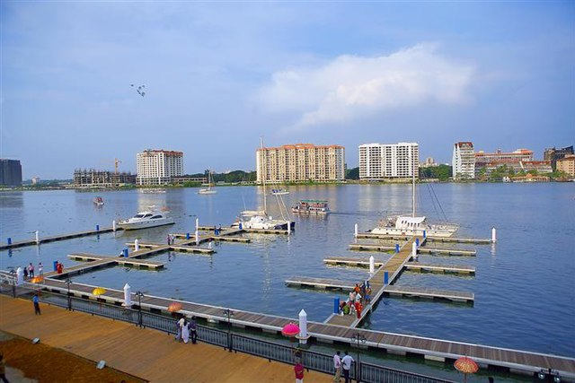

About Ernakulam
Ernakulam, a bustling urban district situated in the central part of Kerala, India, stands as a testament to the harmonious coexistence of tradition and modernity. This district, also known as the commercial capital of Kerala, encompasses the vibrant city of Kochi, which has played a pivotal role in the region's historical and economic landscape. Renowned for its picturesque landscapes, diverse communities, and thriving trade, Ernakulam attracts visitors with its unique blend of colonial heritage and contemporary dynamism.